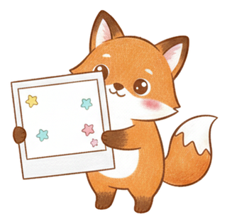

插曲 ①
本來只想放一點貼紙，結果貼紙魂大爆發！
原本只打算準備基礎的幾十張日常貼紙，結果越做越上癮，從咖啡甜點、毛孩、四季限定，一路私心加碼到台灣夜市滷肉飯與地瓜球、童年鉛筆捲錄音帶，還有「沒有頭型外框、可以直接貼在拿鐵或食物上的純臉部表情」——回過神來已經破 1,200 款了！
一台「很想記錄生活、但實在太懶得修圖」的拍照手帳，怎麼從一個天馬行空的念頭，一路長出 1,200+ 款插畫貼紙和一隻小狐狸吉祥物。

其實出發點很單純——平常很想記錄生活，卻又懶得調濾鏡、排字、剪影片。很多平凡又可愛的瞬間（早餐、夕陽、打盹的貓），拍完就靜靜躺在相簿裡，回頭根本想不起來那一天發生了什麼。
於是摩卡和 AI 夥伴決定一起做一台「按一下快門就是完整一頁手帳」的相機：不用修圖、不用開帳號、免費版也完全沒廣告、不限張數，喜歡再一次買斷 VIP 解鎖更多貼紙與進階功能，沒有任何訂閱壓力。

原本只打算準備基礎的幾十張日常貼紙，結果越做越上癮，從咖啡甜點、毛孩、四季限定，一路私心加碼到台灣夜市滷肉飯與地瓜球、童年鉛筆捲錄音帶，還有「沒有頭型外框、可以直接貼在拿鐵或食物上的純臉部表情」——回過神來已經破 1,200 款了！

Mori 是「森林」的意思，一開始只是幫森林主題畫了幾隻小狐狸貼紙，沒想到可愛到完全停不下來！不只獨立開了 66 款小狐狸專屬分頁（會拍照、寫手帳、泡溫泉、吃拉麵、舉拍立得），現在連官網都讓他來當大家的懶人客服小幫手。

在幫這隻蓬鬆純白薩摩耶自動去背時，因為白毛筆觸中間有小空隙，去背程式不小心把他整個胸口和額頭都摳成透明——在深色畫面上看起來瞬間只剩一顆頭配兩條長腿，把我們笑翻 😂 後來特別幫白毛加上閉合修邊演算法，才順利讓雲朵天使恢復蓬鬆可愛！
@帳號 或匯入個人 Logo 圖片章。
只要你是 VIP，歡迎寫信告訴小狐狸你想要的貼紙主題、濾鏡色調或順手小功能。每當願望在下一次免費更新裡實現，我們就會把他記在這面實現牆上 ✨
How a camera for people who want to remember their days (but are way too lazy to edit) grew into 1,200+ original illustrated stickers and a little forest fox mascot.
It started with a very honest feeling: wanting to keep everyday memories, yet being way too lazy to edit filters, write captions, or cut videos. Quiet little moments — breakfast, sunset skies, a sleeping cat — end up buried in the camera roll.
So Mocha teamed up with AI collaborators to build a one-tap photo diary: no editing, no account, zero ads and no photo limits even on Free, and a simple one-time VIP unlock if you'd like the full sticker library and pro tools — never a subscription.
What began as a tiny starter pack snowballed fast: cozy cafes, pets, seasonal festivals, Taiwanese night-market street food, a 90s retro cassette & pencil box, and floating kawaii faces you can stick right onto any coffee cup — before we knew it, we'd passed 1,200 stickers!
"Mori" means forest. A few forest fox stickers were just supposed to be extras, until the little fox stole everyone's heart — earning its own 66-sticker tab (taking selfies, soaking in an onsen, slurping ramen) and even running our website's FAQ desk!
Because our pure-white Samoyed has wispy fluffy fur lines, our auto-cutout tool accidentally leaked right through the gaps and turned its entire fluffy chest transparent — leaving just a floating head and two long legs on dark backgrounds 😂 A custom white-fur closing fix brought our snow-white cloud angel right back!
@handle or personal logo.
VIP members can email our little fox any sticker theme or handy feature wish — whenever a wish ships in a free update, we'll celebrate it right here on this wall ✨
「記録したいけど加工はめんどう」という正直な気持ちから始まって、1,200 種以上のイラストステッカーと子ぎつねマスコットが生まれるまでの小さな裏話。
毎日を残したい気持ちはあるのに、フィルターを調整したり動画編集したりするのは正直しんどい……そんなずぼらな自分のために、AI パートナーと一緒に「シャッターを押すだけで手帳の1ページが完成するカメラ」を作りました。
アカウント登録なし、無料版でも広告ゼロ・枚数無制限。気に入っていただけたら一度きりの買い切り VIP でステッカーと便利機能をぜんぶ解放できる、やさしいカメラを目指しています。
最初は少しだけステッカーを入れる予定だったのに、カフェ、ペット、季節イベント、台湾夜市グルメ、鉛筆で巻き戻すカセットテープ、コーヒーカップに直接貼れる「顔だけステッカー」まで楽しくなってしまい、気づけば 1,200 種超えになりました！
「Mori＝森」にちなんで少しだけ描いた子ぎつねが可愛すぎて、気づけば専用タブ（66 種！自撮り・温泉・ラーメン・手帳タイム）ができ、いつの間にかこのサイトの FAQ 案内係まで務めることに。
ふわふわの白い毛のすき間から背景切り抜き処理が入り込み、胸の毛まで透明になって顔と長い足だけ浮いて見えた爆笑ハプニング 😂 白毛専用の輪郭クローズ処理を追加して、無事もふもふの雲天使に戻りました！
VIP の方から届いたステッカーや機能のリクエストを無料アップデートで形にしたら、このボードに記録していきます ✨
"기록은 하고 싶은데 보정은 너무 귀찮아"라는 솔직한 마음에서 시작해 1,200종 이상의 일러스트 스티커와 아기 여우 마스코트가 탄생하기까지의 비하인드 스토리.
평범하지만 사랑스러운 하루를 남기고 싶은데, 매번 보정하고 편집하기는 너무 귀찮았어요. 그래서 AI 파트너와 함께 '셔터만 누르면 다이어리 한 페이지가 완성되는 카메라'를 만들었습니다.
회원가입 없이, 무료 버전도 광고 0·무제한 촬영! 마음에 들 때만 평생 1회 VIP로 더 많은 스티커와 기능을 열 수 있는 부담 없는 앱을 지향해요.
처음엔 기본 스티커 몇십 개만 넣으려 했는데 너무 재밌어져서 카페, 반려동물, 계절 한정, 대만 야시장 먹거리, 연필로 감는 카세트테이프, 커피잔에 바로 붙이는 얼굴 표정 스티커까지 1,200종을 훌쩍 넘겨버렸어요!
'Mori(숲)' 콘셉트로 몇 장만 넣으려던 아기 여우가 너무 귀여워서 66종 전용 탭(셀카·온천·라멘·다이어리 쓰기)이 생기고, 이제는 웹사이트 FAQ 도우미까지 맡게 되었답니다.
복슬복슬한 흰 털 선 사이의 미세한 틈으로 자동 누끼가 새어 들어가 가슴 털이 통째로 투명해지는 바람에 어두운 화면에서 얼굴과 긴 다리만 둥둥 떠 보였던 웃픈 순간 😂 흰 털 전용 보정 로직을 넣어 무사히 구름 천사로 복구했어요!
VIP 회원이 메일로 보내주신 스티커 테마나 기능 아이디어가 무료 업데이트에 반영될 때마다 이곳에 기록할게요 ✨